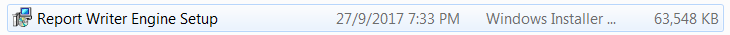
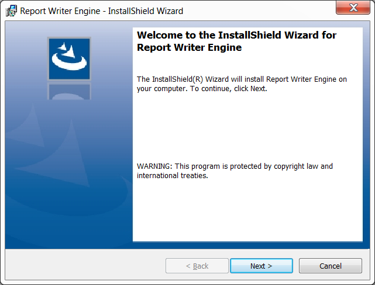
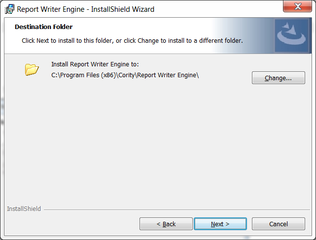
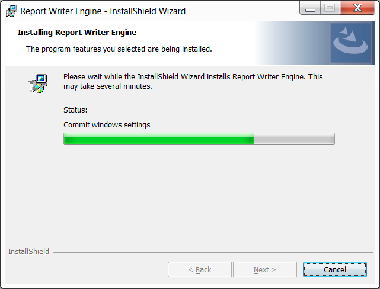
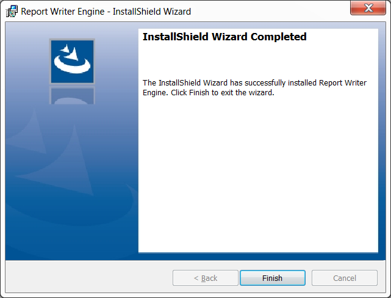

If you have installed a previous version of the Report Writer Utility, please uninstall the old version before proceeding to this new installation.
Install Microsoft .NET Framework 4.5.2. The download and instructions are available from the Microsoft website.
Extract the Cority zip file or the Report Writer Utility zip file and locate the Report Writer Utility folder.
Open the folder and run the setup by double-clicking the Report Writer Utility.msi icon. The Report Writer Utility - InstallShield Wizard will open.

Click Next.

Click Install to begin the installation, or Back to change your installation settings.

The InstallShield Wizard will begin installing the Report Writer Utility. This process may take several minutes.

When the installation is complete, click Finish to exit the InstallShield Wizard.

After the program has finished installing, you will need to restart your computer. Once you have restarted your computer, the program will appear in your Windows > Start Menu > Cority folder.